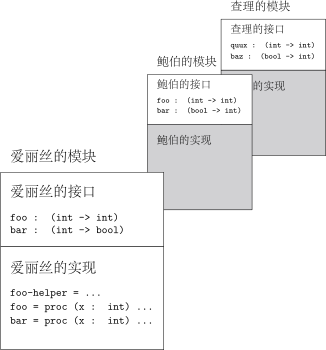

8 模块
要构建只有几百行代码的系统，我们介绍的语言特性已非常强大。如果我们要构建更大的系 统，有数千行代码，我们就还需要一些别的佐料。
-
我们需要一种好的方式，将系统分为相对独立的部分，并能编写文档，解释各部分 之间的依赖关系。
-
我们需要一种更好的方式来控制名字的作用域和绑定。词法定界是命名控制的强大 工具，但不足以应对更大或分割为多份源代码的程序。
-
我们需要一种方式强化抽象边界。在数据抽象，我们介绍了抽象数据类型的思想。 在类型的实现中，我们可以对值做任意操作，但在实现之外，类型的值只能通过类型接口 中的过程创建和操作。我们把这叫做抽象边界 (abstraction boundary)。如果程序遵守这一界限，我们可 以改变数据类型的实现。但是，如果某些代码打破了抽象，依赖实现细节，我们就无法任 意修改实现而不破坏其他代码。
-
最后，我们需要一种方式，将这些部分灵活组合，让同一部分可复用于不同地方。
本章，我们介绍模块 (module)，以满足这些需求。具体来说，我们展示了如何用 类型系统创建和强化抽象边界。
我们的模块语言中，程序包含一系列模块定义 (module definition)，后跟一个待 求值的表达式。每个模块定义把一个名字绑定到一个模块。创建的模块可能 是简单模块 (simple module)，类似环境，是一组绑定；也可能是模块过程 (module procedure)，取一模块，生成另一模块。
每个模块都有一套接口 (interface)。作为一组绑定的模块具有简单接口 (simple interface)，接口列出模块提供的绑定及其类型。模块过程的接口指定模块的 参数接口和返回模块的接口，就像过程的类型指定参数和结果的类型。
这些接口就像类型一样，决定了模块组合的方式。因为求出示例程序的值非常直接，因此我 们关注其类型。如前所见，理解这种语言的定界和绑定规则是程序分析和求值的关键。
8.1 简单模块系统
我们的第一种语言名叫 SIMPLE-MODULES，只有简单模块。它没有模块过程，只创建非常简 单的抽象边界。几种流行语言使用与之类似的模块系统。
8.1.1 例子
设想一个软件项目中有三名开发者：爱丽丝、鲍伯和查理。爱丽丝、鲍伯和查理正在开发项 目中相对独立的几部分。这些开发者散居各地，时区都可能不同。项目的每部分都要实现一 套用接口定义数据那样的接口，但接口的实现可能涉及大量其他过程。而且，当各部分集成 到一起时，开发者需要确保不存在干扰项目其他部分的命名冲突。
要实现这一目标，开发者们需要公布一套接口，列出每个供他人使用的过程名字。模块系统 要保证这些名字是公开的，而它们使用的其他名字则是私有的，且不会被项目中的其他代码 修改。
我们可以用表达式中的定界技术，但这些无法应对更大的工程。相反，我们使用模 块系统。开发者们各设计一个模块，包含公开接口和私有实现。他们能看到自己模块的接口 和实现，但爱丽丝只能看到他人模块的接口。她的所做所为不会影响其他模块的实现，其他 模块的实现也不会影响她的（如 所示）。
这里是 SIMPLE-MODULES 的简短例子。
module m1
interface
[a : int
b : int
c : int]
body
[a = 33
x = -(a,1) % = 32
b = -(a,x) % = 1
c = -(x,b)] % = 31
let a = 10
in -(-(from m1 take a,
from m1 take b),
a)
类型为 int，值为 ((33-1)-10)=22。
[!t]
这个程序从名为 m1 的模块定义开始。像任何模块一样，它有接口和主体。 主体实现接口。接口声明变量 a、b 和 c。主体定 义了 a、x、b 和 c 的绑定。
当我们求程序的值时，也会求出 m1 主体中表达式的值。变量 from m1 take a、 from m1 take b 和 from m1 take c 绑定到适当的值，它们的作用域为模块定 义之后。由于 from m1 take x 未在接口中声明，所以它的作用域不包含模块定义之 后。
为了同简单变量 (simple variables) 区别，我们称这些新变量 为受限变量 (qualified variables)。在一般的语言中，受限变量可能写作 m1.a、m1:a 或 m1::a。在对象和类探讨的面向对象语言中， m1.a 通常另有含义。
我们说接口提出 (offer)（或称公布 (advertise)， 或称承诺 (promise)）三个整型值，主体提 供 (supply, provide)（或称输出 (export)）这些值。当模块主体提供的值类型与接口命名变量时公 布的类型相符时，主体满足其接口。
在主体中，定义具有 let* 那样的作用域，所以 x、b 和 c 的定义 在 a 的作用域内。一些作用域如 所示。
本例中，以 let a = 10 开头的表达式是程序主体 (program body)。它的值 即程序的值。
每个模块都在模块主体和程序其余部分之间建立了抽 象边界。模块主体中的表达式在抽象边界之内，其他部分在抽象边界之外。 模块主体也可以提供不在接口中的名字绑定，但那些绑定在程序主体和其他模块中不可见， 正如 所示。在我们的例子中，程序主体不在 from m1 take x 的作用域内。如果我们写 -(from m1 take a, from m1 take x)，程序就会类型异常。
module m1
interface
[u : bool]
body
[u = 33]
44
类型异常。即使程序的其他部分不使用那些值，模块主体也要将接口中的名字与适当类型的 值关联起来。
[!ht]
module m1
interface
[u : int
v : int]
body
[u = 33]
44
类型异常，因为 m1 的主体没有提供接口中公布的所有值。
为了让实现简单一点，我们的语言要求模块主体按照接口声明的顺序给出各值。因此
module m1
interface
[u : int
v : int]
body
[v = 33
u = 44]
from m1 take u
类型异常。可以免除这一限制（、ex8.17）。
module m1
interface
[u : int]
body
[u = 44]
module m2
interface
[v : int]
body
[v = -(from m1 take u,11)]
-(from m1 take u, from m2 take v)
类型为 int。但如果我们交换定义的顺序，
module m2
interface
[v : int]
body
[v = -(from m1 take u,11)]
module m1
interface
[u : int]
body
[u = 44]
-(from m1 take u, from m2 take v)
则类型异常，因为 m2 主体中使用 from m1 take u 的地方不在后者的作用域 内。
8.1.2 实现简单模块系统
语法
SIMPLE-MODULES 的程序包含一串模块定义，然后是一个表达式。
\begin{align*} \mathit{Program} &::= \{\mathit{ModuleDefn}\}^{*} \mathit{Expression} \\[-3pt] &\mathrel{\phantom{::=}} \fbox{a-program (m-defs body)}\end{align*}
模块定义包含名字、接口和主体。
\begin{align*}\mathit{ModuleDefn} &::= module \ \mathit{Identifier} \ interface \ \mathit{Iface} \ body \ \mathit{ModuleBody} \\[-3pt] &\mathrel{\phantom{::=}} \fbox{a-module-definition (m-name expected-iface m-body)}\end{align*}
简单模块的接口包含任意数量的声明。每个声明指定程序中一个变量的类型。 我们称之为值声明 (value declaration)，因为要声明的变量表示一个值。在后面 几节中，我们介绍其他类别的接口和声明。
\begin{align*} \mathit{Iface} &::= [ \{\mathit{Decl}\}^{*} ] \\[-3pt] &\mathrel{\phantom{::=}} \fbox{simple-iface (decls)} \\[-5pt] \mathit{Decl} &::= \mathit{Identifier} : \mathit{Type} \\[-3pt] &\mathrel{\phantom{::=}} \fbox{val-decl (var-name ty)}\end{align*}
模块主体包含任意数量的定义。每个定义将变量和某个表达式的值关联起来。
\begin{align*}\mathit{ModuleBody} &::= [ \{\mathit{Defn}\}^{*} ] \\[-3pt] &\mathrel{\phantom{::=}} \fbox{defns-module-body (defns)} \\[-5pt] \mathit{Defn} &::= \mathit{Identifier} = \mathit{Expression} \\[-3pt] &\mathrel{\phantom{::=}} \fbox{val-defn (var-name exp)}\end{align*}
我们的表达式与 CHECKED（CHECKED：带有类型检查的语言）相同，但我们要修改语法，新增一种表达式， 以便使用受限变量。
\begin{align*}\mathit{Expression} &::= from \mathit{Identifier} take \mathit{Identifier} \\[-3pt] &\mathrel{\phantom{::=}} \fbox{qualified-var-exp (m-name var-name)}\end{align*}
解释器
求模块主体的值会得到一个模块。在我们的简单模块语言中，模块是一个环境，包 含模块输出的所有绑定。我们用数据类型 typed-module 表示这些。
(define-datatype typed-module typed-module? (simple-module (bindings environment?)))
我们用一种新的绑定在环境中绑定模块名：
(define-datatype environment environment? (empty-env) (extend-env ...as before...) (extend-env-rec ...as before...) (extend-env-with-module (m-name symbol?) (m-val typed-module?) (saved-env environment?)))
例如，如果我们的程序是
module m1
interface
[a : int
b : int
c : int]
body
[a = 33
b = 44
c = 55]
module m2
interface
[a : int
b : int]
body
[a = 66
b = 77]
let z = 99
in -(z, -(from m1 take a, from m2 take a))
那么声明 z 之后的环境是
#(struct:extend-env z #(struct:num-val 99) #(struct:extend-env-with-module m2 #(struct:simple-module #(struct:extend-env a #(struct:num-val 66) #(struct:extend-env b #(struct:num-val 77) #(struct:empty-env)))) #(struct:extend-env-with-module m1 #(struct:simple-module #(struct:extend-env a #(struct:num-val 33) #(struct:extend-env b #(struct:num-val 44) #(struct:extend-env c #(struct:num-val 55) #(struct:empty-env))))) #(struct:empty-env)))) 在这个环境中，m1 和 m2 各绑定到一个简单模块，二者分别包含一个小环境。
我们用 lookup-qualified-var-in-env 求受限变量 from m take var 引用的值。它在当前环境中查找模块 m，然后在得到的环境中查找 var。
lookup-qualified-var-in-env! : \mathit{Sym} \times \mathit{Sym} \times \mathit{Env} \to \mathit{ExpVal} (define lookup-qualified-var-in-env (lambda (m-name var-name env) (let ((m-val (lookup-module-name-in-env m-name env))) (cases typed-module m-val (simple-module (bindings) (apply-env bindings var-name))))))
要求程序的值，我们把所有模块定义加入当前环境中，得到初始环境，然后求程序主体的值。 过程 add-module-defns-to-env 遍历模块定义，求每个模块定义主体的值，并将得到 的模块加入当前环境中，如 所示。
最后，要求模块主体的值，我们按照 let* 式定界，在适当的环境内求每个表达式的 值，得出一环境。过程 defns-to-env 生成的环境只包含定义 defns 产生的绑 定（）。
[!t]
value-of-program : \mathit{Program} \to \mathit{ExpVal} (define value-of-program (lambda (pgm) (cases program pgm (a-program (m-defns body) (value-of body (add-module-defns-to-env m-defns (empty-env))))))) add-module-defns-to-env : \mathit{Listof(Defn)} \times \mathit{Env} \to \mathit{Env} (define add-module-defns-to-env (lambda (defns env) (if (null? defns) env (cases module-definition (car defns) (a-module-definition (m-name iface m-body) (add-module-defns-to-env (cdr defns) (extend-env-with-module m-name (value-of-module-body m-body env) env)))))))
[!ht]
value-of-module-body : \mathit{ModuleBody} \times \mathit{Env} \to \mathit{TypedModule} (define value-of-module-body (lambda (m-body env) (cases module-body m-body (defns-module-body (defns) (simple-module (defns-to-env defns env)))))) defns-to-env : \mathit{Listof(Defn)} \times \mathit{Env} \to \mathit{Env} (define defns-to-env (lambda (defns env) (if (null? defns) (empty-env) (cases definition (car defns) (val-defn (var exp) (let ((val (value-of exp env))) (let ((new-env (extend-env var val env))) (extend-env var val (defns-to-env (cdr defns) new-env)))))))))
检查器
检查器的工作是确保所有模块主体满足其接口，且所有变量的使用符合其类型。
我们语言的定界规则很简单：模块遵循 let* 式定界，依次进入模块输出绑定中的受 限变量的作用域。接口告诉我们每个受限变量的类型。声明和定义也都遵循 let* 式 定界（如）。
就像类型中的检查器那样，我们用类型环境记录与当前作用域内各名字的相关信 息。因为我们现在有了模块名，我们要在类型环境中绑定模块名。每个模块名绑定到模块的 接口，作为其类型。
(define-datatype type-environment type-environment? (empty-tenv) (extend-tenv ...同前...) (extend-tenv-with-module (name symbol?) (interface interface?) (saved-tenv type-environment?)))
要找出受限变量 from m take var 的类型，我们首先在类型环境中找出 m，然后在得到的接口中查找 var 的类型。
lookup-qualified-var-in-tenv : \mathit{Sym} \times \mathit{Sym} \times \mathit{Tenv} \to \mathit{Type} (define lookup-qualified-var-in-tenv (lambda (m-name var-name tenv) (let ((iface (lookup-module-name-in-tenv tenv m-name))) (cases interface iface (simple-iface (decls) (lookup-variable-name-in-decls var-name decls))))))
[!t]
type-of-program : \mathit{Program} \to \mathit{Type} (define type-of-program (lambda (pgm) (cases program pgm (a-program (module-defns body) (type-of body (add-module-defns-to-tenv module-defns (empty-tenv))))))) add-module-defns-to-tenv : \mathit{Listof(ModuleDefn)} \times \mathit{Tenv} \to \mathit{Tenv} (define add-module-defns-to-tenv (lambda (defns tenv) (if (null? defns) tenv (cases module-definition (car defns) (a-module-definition (m-name expected-iface m-body) (let ((actual-iface (interface-of m-body tenv))) (if (<:-iface< /span> actual-iface expected-iface tenv) (let ((new-tenv (extend-tenv-with-module m-name expected-iface tenv))) (add-module-defns-to-tenv (cdr defns) new-tenv)) (report-module-doesnt-satisfy-iface m-name expected-iface actual-iface))))))))
就像类型那样，对程序做类型检查的过程类模仿程序的求值，但我们记录的不是 值，而是类型。我们用 type-of-program 代替 value-of-program，用 add-module-defns-to-tenv 代替 add-module-defns-to-env。过程 add-module-defns-to-tenv 用 <:-iface< /span> 检查各模块主体产生的接口与提出的 接口是否相符；如果相符，就将模块加入到类型环境中；否则报错。
模块主体的接口将主体中定义的各个变量与定义中的类型关联起来。例如，如果我们查看第 一个例子的主体，
[a = 33
x = -(a,1)
b = -(a,x)
c = -(x,b)]
可得
[a : int
x : int
b : int
c : int]
一旦我们建立了一套接口来描述模块主体输出的所有绑定，我们就能将其与模块公布的接口 比较。
回忆一下，简单接口包含一个声明列表。过程 defns-to-decls 创建这样的列表，调 用 type-of 找出每个定义的类型。在每一步，它还按 let* 定界，扩展局部类 型环境（见）。
剩下的只是用 <:-iface< /span> 比较每个模块的期望类型与实际类型。我们将 <:< /span> 定义 为：若 i_1 <:< /span> i_2 ，则满足接口 i_1 的任何模块也满足接口 i_2。例如
[u : int [u : int
v : int <:< /span> z : int]
z : int]
因为满足接口 [u : int v : bool z : int] 的任何模块都提供了接口 [u : int z : int] 公布的所有值。
对我们的简单模块语言，<:-iface< /span> 只需调用 <:-decls< /span> 比较声明。这些过程取 一 tenv 参数，简单模块系统不使用它，但声明类型的模块需要。 见。
过程 <-decls< /span> 执行主要工作，比较两个声明集合。如果 decls_1 和 decls_2 是两个声明集合，当且仅当任何能提供 decls_1 中声明绑定的模块，也 能提供 decls_2 中声明的绑定时，我们说 decls_1 <: decls_2。如果 decls_2 中的所有声明，在 decls_1 中都有与之匹配的声明，就能保证这一点， 就像上面的例子那样。
[!t]
interface-of : \mathit{ModuleBody} \times \mathit{Tenv} \to \mathit{Iface} (define interface-of (lambda (m-body tenv) (cases module-body m-body (defns-module-body (defns) (simple-iface (defns-to-decls defns tenv)))))) defns-to-decls : \mathit{Listof(Defn)} \times \mathit{Tenv} \to \mathit{Decl} (define defns-to-decls (lambda (defns tenv) (if (null? defns) '() (cases definition (car defns) (val-defn (var-name exp) (let ((ty (type-of exp tenv))) (cons (val-decl var-name ty) (defns-to-decls (cdr defns) (extend-tenv var-name ty tenv)))))))))
过程 <:-decls< /span> 首先检查 decls1 和 decls2。若 decls2 为空，那 么它对 decls1 无所要求，所以结果为 #t。若 decls2 非空，但 decls1 为空，那么 decls2 有所要求，但 decls1 无可提供，所以结果为 #f。否则，我们比较 decls1 和 decls2 声明的第一对变量的名字；若二 者相同，那么它们的类型必须匹配，然后我们递归处理两个声明列表余下的部分；若他们不 同，那么我们递归处理 decls1 的 cdr，找出匹配 decls2 中第一个声明 的内容。
[!ht]
<:-iface< /span> : \mathit{Iface} \times \mathit{Iface} \times \mathit{Tenv} \to \mathit{Bool} (define <:-iface< /span> (lambda (iface1 iface2 tenv) (cases interface iface1 (simple-iface (decls1) (cases interface iface2 (simple-iface (decls2) (<:-decls< /span> decls1 decls2 tenv))))))) <:-decls< /span> : \mathit{Listof(Decl)} \times \mathit{Listof(Decl)} \times \mathit{Tenv} \to \mathit{Bool} (define <:-decls< /span> (lambda (decls1 decls2 tenv) (cond ((null? decls2) #t) ((null? decls1) #f) (else (let ((name1 (decl->name (car decls1))) (name2 (decl->name (car decls2)))) (if (eqv? name1 name2) (and (equal? (decl->type (car decls1)) (decl->type (car decls2))) (<:-decls< /span> (cdr decls1) (cdr decls2) tenv)) (<:-decls< /span> (cdr decls1) decls2 tenv)))))))
\textnormal{[}{\star}\textnormal{]} 修改检查器，检测并拒绝任何定义两个同名模块的程序。
\textnormal{[}{\star}\textnormal{]} 过程 add-module-defns-to-env 不完全正确，因为它加入了模块定义的所有值，而不 只是接口中的值。修改 add-module-defns-to-env，只加入接口中声明的值。 add-module-defns-to-tenv 也有此问题吗？
\textnormal{[}{\star}\textnormal{]} 修改语言的语法，以 m.v 代替 from m take v 使用受限变量。
\textnormal{[}{\star}\textnormal{]} 修改语言的表达式，像 那样，加入多声明 let、多参数过程 和多声明 letrec。
\textnormal{[}{\star}\textnormal{]} 允许在模块主体中使用 let 和 letrec 声明。例如，可以写
module even-odd
interface
[even : (int -> bool)
odd : (int -> bool)]
body
letrec
bool local-odd (x : int) = ... (local-even -(x,1)) ...
bool local-even (x : int) = ... (local-odd -(x,1)) ...
in [even = local-even
odd = local-odd]
\textnormal{[}{\star}{\star}\textnormal{]} 允许在模块主体中定义局部模块。例如，可以写
module m1
interface
[u : int
v : int]
body
module m2
interface [v : int]
body [v = 33]
[u = 44
v = -(from m2 take v, 1)]
\textnormal{[}{\star}{\star}\textnormal{]} 扩展前一题的解答，允许模块将其他模块作为输出的一部分。例如，可以写
module m1
interface
[u : int
n : [v : int]]
body
module m2
interface [v : int]
body [v = 33]
[u = 44
n = m2]
from m1 take n take v
\textnormal{[}{\star}{\star}\textnormal{]} 在我们的语言中，模块必须按照接口中的顺序产生值，可以取消这种限制。取消它。
\textnormal{[}{\star}{\star}\textnormal{]} 我们说我们的模块系统应当能解释模块之间的依赖关系。给 SIMPLE-MODULES 添加这种能力， 在模块主体和程序主体中添加一条 depends-on 语句。那么，模块 m 不是在之 前声明的所有模块的作用域中，而是在自身 depends-on 语句中列出模块的作用域中。 例如，考虑程序
module m1 ...
module m2 ...
module m3 ...
module m4 ...
module m5
interface [...]
body
depends-on m1, m3
[...]
m5 的主体仅在来自 m1 或 m3 的受限变量的作用域中。即使 m4 输 出了 x 的值，使用 from m4 take x 也将造成类型异常。
\textnormal{[}{\star}{\star}{\star}\textnormal{]} 我们还可以用 depends-on 这样的特性控制模块主体求值的时机。给 SIMPLE-MODULES 增加这种能力，在各模块主体和程序主体添加一条 imports 语句。imports 就 像 depends-on，不同之处是，仅当（用 imports 语句）将模块输入到其他模块 时，才求其主体的值。
这样，如果我们的语言有打印表达式，程序
module m1
interface [] body [x = print(1)]
module m2
interface [] body [x = print(2)]
module m3
interface []
body
import m2
[x = print(3)]
import m3, m1
33
在返回 33 之前，将打印 2、3 和 1。这里的模块接口为空，因为我们只关心它们主体求值 的顺序。
\textnormal{[}{\star}{\star}{\star}\textnormal{]} 修改检查器，用 INFERRED 作为语言的表达式。这道练习中，你需要修改 <:-decls< /span>， 不能用 equal? 比较类型。例如，在
module m
interface [f : (int -> int)]
body [f = proc (x : ?) x]
中，类型推导器报告的 f 实际类型可能是 (tvar07 -> tvar07)，这应当接受。 但是，我们应拒绝模块
module m
interface [f : (int -> bool)]
body [f = proc (x : ?) x]
8.2 声明类型的模块
至今为止，我们的接口只声明了普通变量及其类型。在下面这 种模块语言 OPAQUE-TYPES 中，我们还允许接口声明类型。例如，在定义
module m1
interface
[opaque t
zero : t
succ : (t -> t)
pred : (t -> t)
is-zero : (t -> bool)]
body
...
中，接口声明了类型 t，以及该类型值的操作 zero、succ、pred 和 is-zero。如同用接口定义数据，这套接口可能与算术操作的实现相关。这里的声明 t 为模糊类型 (opaque type)，意为，模块之外的代码不知道这种类型的值 如何表示。所有的外部代码都知道可以用 from m1 take zero 和 from m1 take succ 等过程处理 from m1 take t 类型的值。这样，from m1 take t 的表现 就像 int 和 bool 之类的原生类型一样。
我们将介绍两种类型声明：透明 (transparent) 类型和模糊 (opaque) 类型。好的模块系统中，二者缺一不可。
8.2.1 例子
欲知其用途，再想想我们的几位开发者。爱丽丝一直用包含整数对的数据结构表示点的横纵 坐标。她使用的语言具有 那样的类型，所以她的模块 Alices-points 接口具有如下声明：
initial-point : (int -> pairof int * int)
increment-x : (pairof int * int -> pairof int * int)
鲍伯和查理对此直发牢骚。他们不想一遍又一遍地写 pairof int * int。因此，爱丽 丝用透明类型声明重写她的接口。这样，她可以写
module Alices-points
interface
[transparent point = pairof int * int
initial-point : (int -> point)
increment-x : (point -> point)
get-x : (point -> int)
...]
这减轻了她的工作，因为她写得更少；这也减轻了她合作者的工作，因为他们在实现中可以 写这样的定义：
[transparent point = from Alices-points take point
foo = proc (p1 : point)
proc (p2 : point) ...
...]
对某些项目中，这很不错。不过，爱丽丝的项目正好要表示固定形状金属导轨上的点，所以 横纵坐标不是相互独立的。不妨将金属导轨视为有长度无宽度的圆形轨迹，以圆心为 坐标原点。要保证横坐标变化时，得到的点仍在圆上，则纵坐标也要相应改变。反之亦 然。——译注爱丽丝实现 increment-x 时，要小心翼翼地更新纵坐标，以匹配 横坐标的改变。但是鲍伯不知道这点，所以他的过程写作
increment-y = proc (p : point)
unpair x y = p
in newpair(x, -(y,-1))
由于鲍伯的代码修改纵坐标时不随之修改横坐标，爱丽丝的代码就没法正常工作了。
更糟糕的是，如果爱丽丝打算修改点的表示，把纵坐标作为第一部分呢？她可以按照新的表 示修改她的代码。但是鲍伯的代码就坏掉了，因为过程 increment-y 修改了序对中的 错误部分。
爱丽丝可以把 point 声明为模糊数据类型来解决她的问题。她把接口重写为
opaque point
initial-point : (int -> point)
increment-x : (point -> point)
get-x : (point -> int)
现在鲍伯用过程 initial-point 创建新的点，而且他可以用 from Alices-points take get-x 和 from Alices-points take increment-x 处理点，但 是除了爱丽丝接口中的过程外，他无法用其他过程处理点。尤其是，他写不出过程 increment-y，因为它用了爱丽丝接口之外的过程处理点。
在本节的剩余部分中，我们探究这些组件的更多例子。
透明类型
我们首先讨论透明类型声明。有时这些又称作具体 (concrete) 类型 或类型缩写 (type abbreviation)。
module m1
interface
[transparent t = int
z : t
s : (t -> t)
is-z? : (t -> bool)]
body
[type t = int
z = 33
s = proc (x : t) -(x,-1)
is-z? = proc (x : t) zero?(-(x,z))]
proc (x : from m1 take t)
(from m1 take is-z? -(x,0))
类型为 (int -> bool)。
[!ht]

在接口的剩余部分中，声明 transparent t = int 将 t 绑定到类型 int， 所以我们可以写 z : t。更重要的是，在程序的剩余部分中，声明也将 from m1 take t 绑定到 int。我们称之为受限类型 (qualified type)。 这里，我们用它声明了绑定到变量 z 的类型。声明的作用域是接口的剩余部分，以及 模块定义之后程序的剩余部分。
模块主体中的定义 type t = int 在主体的剩余部分中，将 t 绑定到 int， 所以我们可以写 s = proc (x : t) ...。像之前那样，定义的作用域是主体的剩余部 分（见）。
当然，我们可以给类型起任意名字，也可以声明多个类型。类型声明可以出现在接口中任意 位置，只要每个声明都先于使用。
模糊类型
模块还可以用 opaque-type 声明输出模糊类型。模糊类型有时又 称作抽象类型 (abstract type)。
module m1
interface
[opaque t
z : t
s : (t -> t)
is-z? : (t -> bool)]
body
[type t = int
z = 33
s = proc (x : t) -(x,-1)
is-z? = proc (x : t) zero?(-(x,z))]
proc (x : from m1 take t)
(from m1 take is-z? -(x,0))
接口中的声明 opaque t 把 t 作为一种新的模糊类型名字。模糊类型的行为就 像 int 或 bool 之类的原生类型。名为 t 的类型在接口的剩余部分中绑 定到这种模糊类型，而受限类型 from m1 take t 在程序的剩余部分中绑定到同一模 糊类型。程序的剩余部分都知道 from m1 take z 绑定到一个值，其类型为 from m1 take t；from m1 take s 和 from m1 take is-z? 绑定到过程，用来处理 这种类型的值。这就是抽象边界。类型检查器确保表 达式的类型为 from m1 take t时，求值是安全的，所以表达式的值只能通过这些操作 符生成，如suitable-env所述。
与之对应，定义 type t = int 在模块主体内部将 t 作为 int 的名字， 但是，由于程序的剩余部分从模块接口获得绑定，所以对此一无所知。
所以 -(x,0) 类型异常，因为主程序不知道类型 from m1 take t 为的值就是类 型为 int 的值。
我们改变程序，删掉算术操作，得
module m1
interface
[opaque t
z : t
s : (t -> t)
is-z? : (t -> bool)]
body
[type t = int
z = 33
s = proc (x : t) -(x,-1)
is-z? = proc (x : t) zero?(-(x,z))]
proc (x : from m1 take t)
(from m1 take is-z? x)
现在，我们的程序类型正常，类型为 (from m1 take t -> bool)。
通过强化抽象边界，类型检查器确保程序只能通过接口提供的过程处理接口提供的值。 如数据抽象所述，这给我们提供了机制来分离数据类型的用户和实现。接下来，我们给 出这一技术的几个例子。
module colors
interface
[opaque color
red : color
green : color
is-red? : (color -> bool)]
body
[type color = int
red = 0
green = 1
is-red? = proc (c : color) zero?(c)]
程序没法知道 from colors take color 实际为 int，也不知道 from colors take green 实际为 1（也许有一个例外：返回颜色作为最终答案，然后打印出 来）。
module ints1
interface
[opaque t
zero : t
succ : (t -> t)
pred : (t -> t)
is-zero : (t -> bool)]
body
[type t = int
zero = 0
succ = proc(x : t) -(x,-5)
pred = proc(x : t) -(x,5)
is-zero = proc (x : t) zero?(x)]
let z = from ints1 take zero
in let s = from ints1 take succ
in (s (s z))
类型为 from ints1 take t，值为 10。但我们只能通过 ints1 输出的过程处理 这个值。这个模块用表达值 5*k 表示整数 k。用用接口定义数据的表示法，写作 \lceil k \rceil = 5 * k。
在这个模块中，\lceil k \rceil = -3 * k。
module ints2
interface
[opaque t
zero : t
succ : (t -> t)
pred : (t -> t)
is-zero : (t -> bool)]
body
[type t = int
zero = 0
succ = proc(x : t) -(x,3)
pred = proc(x : t) -(x,-3)
is-zero = proc (x : t) zero?(x)]
let z = from ints2 take zero
in let s = from ints2 take succ
in (s (s z))
类型为 from ints2 take t，值为 -6。
在前面的例子中，我们不能直接处理值，但我们能用模块输出 的过程处理它们。像数据抽象那样，我们可以结合这些过程做有用的工作。这里，我们 将它们结合起来，写出过程 to-int，把模块中的值转回 int 类型。
module ints1 ...同前...
let z = from ints1 take zero
in let s = from ints1 take succ
in let p = from ints1 take pred
in let z? = from ints1 take is-zero
in letrec int to-int (x : from ints1 take t) =
if (z? x)
then 0
else -((to-int (p x)), -1)
in (to-int (s (s z)))
类型为 int，值为 2。
module ints2 ...同前...
let z = from ints2 take zero
in let s = from ints2 take succ
in let p = from ints2 take pred
in let z? = from ints2 take is-zero
in letrec int to-int (x : from ints2 take t) =
if (z? x)
then 0
else -((to-int (p x)), -1)
in (to-int (s (s z)))
类型同样为 int，值为 2。
在模块过程中，我们展示如何将两个抽象出来。
在下面的程序中，我们设计一个模块来封装布尔类型。布尔值用整数值表示， 但是像 那样，程序的剩余部分对此一无所知。
module mybool
interface
[opaque t
true : t
false : t
and : (t -> (t -> t))
not : (t -> t)
to-bool : (t -> bool)]
body
[type t = int
true = 0
false = 13
and = proc (x : t)
proc (y : t)
if zero?(x) then y else false
not = proc (x : t)
if zero?(x) then false else true
to-bool = proc (x : t) zero?(x)]
let true = from mybool take true
in let false = from mybool take false
in let and = from mybool take and
in ((and true) false)
类型为 from mybool take t，值为 13。
\textnormal{[}{\star}\textnormal{]} 在 中，and 和 not 的定义可以从模块内部移到外面 吗？to-bool 呢？
\textnormal{[}{\star}\textnormal{]} 写一个模块，用 5*k+3 表示整数 k，实现算术操作。
\textnormal{[}{\star}\textnormal{]} 下面是 mybool（）的另一种定义：
module mybool
interface
[opaque t
true : t
false : t
and : (t -> (t -> t))
not : (t -> t)
to-bool : (t -> bool)]
body
[type t = int
true = 1
false = 0
and = proc (x : t)
proc (y : t)
if zero?(x) then false else y
not = proc (x : t)
if zero?(x) then true else false
to-bool = proc (x : t)
if zero?(x) then zero?(1) else zero?(0)]
有没有程序类型为 int，用 mybool 原来的定义返回一个值，用新的定义返回另 一个值？
\textnormal{[}{\star}{\star}\textnormal{]} 写一个模块，实现抽象表。你实现的表应类似环境，但不是把符号绑定到 Scheme 值，而是 把整数值绑定到整数值。接口提供一个值，表示空表；两个过程 add-to-table 和 lookup-in-table 类似 extend-env 和 apply-env。由于我们的语言只有 单参数过程，我们用咖喱化（）实现等效的多参数过程。你可以用 查询任何值都返回 0 的表模拟空表。这是该模块的一个例子：
module tables
interface
[opaque table
empty : table
add-to-table : (int -> (int -> (table -> table)))
lookup-in-table : (int -> (table -> int))]
body
[type table = (int -> int)
...]
let empty = from tables take empty
in let add-binding = from tables take add-to-table
in let lookup = from tables take lookup-in-table
in let table1 = (((add-binding 3) 300)
(((add-binding 4) 400)
(((add-binding 3) 600)
empty)))
in -(((lookup 4) table1),
((lookup 3) table1))
这个程序类型应为 int。表 table1 把 4 绑定到 400，把 3 绑定到 300，所以 程序的值应为 100。
8.2.2 实现
现在我们来扩展系统，实现透明类型和模糊类型声明，及受限类型的引用。
语法和解释器
我们给两种新类型添加语法：有名类型（如 t）和受限类型（如 from m1 take t）。
\begin{align*}\mathit{Type} &::= \mathit{Identifier} \\[-3pt] &\mathrel{\phantom{::=}} \fbox{named-type (name)} \\[5pt] \mathit{Type} &::= from \mathit{Identifier} take \mathit{Identifier} \\[-3pt] &\mathrel{\phantom{::=}} \fbox{qualified-type (m-name t-name)}\end{align*}
我们为模糊类型和透明类型新增两种声明。
\begin{align*}\mathit{Decl} &::= opaque \mathit{Identifier} \\[-3pt] &\mathrel{\phantom{::=}} \fbox{opaque-type-decl (t-name)} \\[5pt] \mathit{Decl} &::= transparent \mathit{Identifier} = \mathit{Type} \\[-3pt] &\mathrel{\phantom{::=}} \fbox{transparent-type-decl (t-name ty)}\end{align*}
我们还要新增一种定义：类型定义，用来定义模糊类型和透明类型。
\begin{align*}\mathit{Defn} &::= type \mathit{Identifier} = \mathit{Type} \\[-3pt] &\mathrel{\phantom{::=}} \fbox{type-defn (name ty)}\end{align*}
解释器不需要查看类型和声明，所以解释器的唯一改动是忽略类型定义。
defns-to-env : \mathit{Listof(Defn)} \times \mathit{Env} \to \mathit{Env} (define defns-to-env (lambda (defns env) (if (null? defns) (empty-env) (cases definition (car defns) (val-defn (var exp) ...as before...) (type-defn (type-name type) (defns-to-env (cdr defns) env))))))
检查器
检查器的改动就多多了，因为所有关于类型的操作都要扩展，以便处理新的类型。
首先，我们介绍一种系统性的方法来处理模糊类型和透明类型。模糊类型就像 int 或 bool 之类的原生类型一样。而透明类型名副其实，是透明的：它们的行为与定义相同。 所以每个类型都等价于下列语法描述的：
\mathit{Type} ::= int\ |\ bool\ |\ from m take t\ |\ (\mathit{Type} -> \mathit{Type})
其中，t 为 m 中的模糊类型声明。我们称这种形式的类型为展开类型 (expanded type)。
接下来我们扩展类型环境，处理新类型。我们的类型环境将每个有名类型或受限类型绑定到 一个展开类型。新的类型环境定义为
(define-datatype type-environment type-environment? (empty-tenv) (extend-tenv ...同前...) (extend-tenv-with-module ...同前...) (extend-tenv-with-type (t-name symbol?) (type type?) (saved-tenv type-environment?))) 它满足条件：type 总是一个展开类型。像invariant讨论的，这个条件是 一不变式。
接着我们写出函数 expand-type，它取一个类型和一个类型环境，用后者中的绑定展 开前者。根据不变式“结果类型已展开”，它在类型环境中查 询有名类型和受限类型，对proc 类型，它递归处理参数和结果类型。
expand-type : \mathit{Type} \times \mathit{Tenv} \to \mathit{ExpandedType} (define expand-type (lambda (ty tenv) (cases type ty (int-type () (int-type)) (bool-type () (bool-type)) (proc-type (arg-type result-type) (proc-type (expand-type arg-type tenv) (expand-type result-type tenv))) (named-type (name) (lookup-type-name-in-tenv tenv name)) (qualified-type (m-name t-name) (lookup-qualified-type-in-tenv m-name t-name tenv)))))
为了维持这一不变式，我们必须保证不论何时扩展类型环境，都要调用 expand-type。 这种地方有三处：
-
在检查器中的 type-of 内；
-
用 defns-to-decls 处理类型定义列表之处；
-
在 add-module-defns-to-tenv 中，向类型环境添加模块之处。
在检查器中，我们把形如
(extend-tenv sym ty tenv)
的调用替换为
(extend-tenv var (expand-type ty tenv) tenv)
在 defns-to-decls 中，当我们遇到类型定义时，我们展开右边的定义，然后将其加 入类型环境中。type-of 返回的类型一定是展开的，所以我们不需要再次展开它。由 于在模块主体中，所有类型绑定都是透明的，所以我们把类型定义转换为透明类型声明。在 add-module-defns-to-tenv 中，我们调用 extend-tenv-with-module，将接口 添加到类型环境中。这里，我们需要展开接口，以确保它包含的所有类型都已展开。要完成 这一点，我们修改 add-module-defns-to-tenv，调用 expand-iface。 见。
过程 expand-iface（）调用 expand-decls。我们提取 出这些过程，为模块过程做准备。
defns-to-decls : \mathit{Listof(Defn)} \times \mathit{Tenv} \to \mathit{Decl} (define defns-to-decls (lambda (defns tenv) (if (null? defns) '() (cases definition (car defns) (val-defn (var-name exp) (let ((ty (type-of exp tenv))) (let ((new-env (extend-tenv var-name ty tenv))) (cons (val-decl var-name ty) (defns-to-decls (cdr defns) new-env))))) (type-defn (name ty) (let ((new-env (extend-tenv-with-type name (expand-type ty tenv) tenv))) (cons (transparent-type-decl name ty) (defns-to-decls (cdr defns) new-env)))))))) add-module-defns-to-tenv : \mathit{Listof(ModuleDefn)} \times \mathit{Tenv} \to \mathit{Tenv} (define add-module-defns-to-tenv (lambda (defns tenv) (if (null? defns) tenv (cases module-definition (car defns) (a-module-definition (m-name expected-iface m-body) (let ((actual-iface (interface-of m-body tenv))) (if (<:-iface< /span> actual-iface expected-iface tenv) (let ((new-env (extend-tenv-with-module m-name (expand-iface m-name expected-iface tenv) tenv))) (add-module-defns-to-tenv (cdr defns) new-env)) (report-module-doesnt-satisfy-iface m-name expected-iface actual-iface))))))))
expand-iface : \mathit{Sym} \times \mathit{Iface} \times \mathit{Tenv} \to \mathit{Iface} (define expand-iface (lambda (m-name iface tenv) (cases interface iface (simple-iface (decls) (simple-iface (expand-decls m-name decls tenv)))))) expand-decls : \mathit{Sym} \times \mathit{Listof(Decl)} \times \mathit{Tenv} \to \mathit{Listof(Decl)} (define expand-decls (lambda (m-name decls internal-tenv) (if (null? decls) () (cases declaration (car decls) (opaque-type-decl (t-name) (let ((expanded-type (qualified-type m-name t-name))) (let ((new-env (extend-tenv-with-type t-name expanded-type internal-tenv))) (cons (transparent-type-decl t-name expanded-type) (expand-decls m-name (cdr decls) new-env))))) (transparent-type-decl (t-name ty) (let ((expanded-type (expand-type ty internal-tenv))) (let ((new-env (extend-tenv-with-type t-name expanded-type internal-tenv))) (cons (transparent-type-decl t-name expanded-type) (expand-decls m-name (cdr decls) new-env))))) (val-decl (var-name ty) (let ((expanded-type (expand-type ty internal-tenv))) (cons (val-decl var-name expanded-type) (expand-decls m-name (cdr decls) internal-tenv))))))))
过程 expand-decls 遍历声明集合，创建新的类型环境，其中的每个类型和变量名都 绑定到一个展开类型。麻烦之处是声明遵循 let* 式作用域：集合中的每个声明的作 用域包含它之后的所有声明。
要明白这意味着什么，考虑模块定义
module m1
interface
[opaque t
transparent u = int
transparent uu = (t -> u)
% A 处
f : uu
...]
body
[...]
要满足不变式，类型环境中的 m1 应绑定到包含如下声明的接口
[transparent t = from m1 take t
transparent u = int
transparent uu = (from m1 take t -> int)
f : (from m1 take t -> int)
...]
只要我们这样做，不论何时我们从类型环境中查询类型时，得到的都是期望的展开类型。
在 A 处，紧随声明 f 之后，类型环境应绑定到
t
绑定到
from m1 take t
u
绑定到
int
uu
绑定到
(from m1 take t -> int)
我们把类似上面 A 处的类型环境称为内部类型环境。它作为参数传给 expand-decls。
现在我们可以写出 expand-decls。像 defns-to-decls，这个过程只创建透明声 明，因为它的用途就是创建查询受限类型所用的数据结构。
最后，我们修改 <:-decls< /span>，处理两种新声明。我们必须处理声明集合内部的作用域关 系。例如，如果我们比较
[transparent t = int
x : bool <:< /span> [y : int]
y : t]
处理声明 y 时，我们需要知道 t 指代 int 类型。所以，当我们递归向下 处理声明列表时，我们需要随之扩展类型环境，就像在 expand-decls 中生成 internal-tenv 一样。我们调用 extend-tenv-with-decl 处理这些，它取一声 明，根据类型环境将其展开为适当的类型（）。
<:-decls< /span> : \mathit{Listof(Decl)} \times \mathit{Listof(Decl)} \times \mathit{Tenv} \to \mathit{Bool} (define <:-decls< /span> (lambda (decls1 decls2 tenv) (cond ((null? decls2) #t) ((null? decls1) #f) (else (let ((name1 (decl->name (car decls1))) (name2 (decl->name (car decls2)))) (if (eqv? name1 name2) (and (<:-decl< /span> (car decls1) (car decls2) tenv) (<:-decls< /span> (cdr decls1) (cdr decls2) (extend-tenv-with-decl (car decls1) tenv))) (<:-decls< /span> (cdr decls1) decls2 (extend-tenv-with-decl (car decls1) tenv)))))))) extend-tenv-with-decl : \mathit{Decl} \times \mathit{Tenv} \to \mathit{Tenv} (define extend-tenv-with-decl (lambda (decl tenv) (cases declaration decl (val-decl (name ty) tenv) (transparent-type-decl (name ty) (extend-tenv-with-type name (expand-type ty tenv) tenv)) (opaque-type-decl (name) (extend-tenv-with-type name (qualified-type (fresh-module-name '%unknown) name) tenv)))))
在展开过程中，我们总是用 decls1。欲知其原因，考虑比较
[transparent t = int [opaque t
transparent u = (t -> t) <:< /span> transparent u = (t -> int)
f : (t -> u)] f : (t -> (int -> int))]
这一比较应该通过，因为当模块主体提供左侧的绑定时，也是右侧接口的正确实现。
比较类型 u 的两个定义时，我们得知道类型 t 实际上是 int。即使左边 的声明没有出现在右边，同样的技巧也适用，就像上面第一个例子中的声明 t 所展示 的。我们调用 expand-type 来维持不变式“类型环境中的所有类型均 已展开”。extend-tenv-with-decl 最后一句中选什么模块名无关紧要， 因为受限类型支持的唯一操作是 equal?。所以用 fresh-module-name 足以保证 这一受限类型是新生成的。
现在来处理关键问题：如何比较声明？仅当二者使用相同的名字（变量或类型）时，声明才 能匹配。如果一对声明同名，有四种匹配方式：
-
二者均为值声明，且类型匹配。
-
二者均为模糊类型声明。
-
二者均为透明类型声明，且定义匹配。
-
decl1 为透明类型声明，decl2 为模糊类型声明。例如，假设有个模块 的接口声明了 opaque t，主体中的定义为 type t = int，应当接受这种做法。 过程 defns-to-decls 将定义 type t = int 转换为透明类型声明，所以 add-module-defns-to-tenv 中的条件
actual-iface <: expected-iface
需要检查 (transparent t = int) <: (opaque t) 是否成立。
由于这一模块应被接受，该项测试应返回真。
这告诉我们，类型已知的对象总能作为类型未知的对象。反之则不然。例如， (opaque t) <: (transparent t = int) 应为假，因为模糊类型值的实际类型可能不是 int，而且满足 opaque t 的模 块可能无法满足 transparent t = int。
[transparent t = int x : bool y : t] <: [y : int]
\textnormal{[}{\star}\textnormal{]} 用 中的语言扩展本节的系统，然后重写， 用多参数过程代替返回过程的过程。
\textnormal{[}{\star}{\star}\textnormal{]} 仿照，允许模块以不同于接口声明的顺序产生值。但是记住，定义—— 尤其是类型的定义——必须遵守定界规则。
\textnormal{[}{\star}{\star}\textnormal{]} 我们代码依赖的不变式是：类型环境中的所有类型均已展开。我们在代码中多次调用 expand-type 来维持这一不变式。这就很容易因忘记调用 expand-type 而破坏 系统。重构代码，减少 expand-type 的调用，以便更稳定地维持不变式。
[!ht]
<:-decl< /span> : \mathit{Decl} \times \mathit{Decl} \times \mathit{Tenv} \to \mathit{Bool} (define <:-decl< /span> (lambda (decl1 decl2 tenv) (or (and (val-decl? decl1) (val-decl? decl2) (equiv-type? (decl->type decl1) (decl->type decl2) tenv)) (and (transparent-type-decl? decl1) (transparent-type-decl? decl2) (equiv-type? (decl->type decl1) (decl->type decl2) tenv)) (and (transparent-type-decl? decl1) (opaque-type-decl? decl2)) (and (opaque-type-decl? decl1) (opaque-type-decl? decl2))))) equiv-type? : \mathit{Type} \times \mathit{Type} \times \mathit{Tenv} \to \mathit{Bool} (define equiv-type? (lambda (ty1 ty2 tenv) (equal? (expand-type ty1 tenv) (expand-type ty2 tenv))))
8.3 模块过程
OPAQUE-TYPES 中的程序有固定的依赖关系。模块 m4 可能依赖 m3 和 m2， m2 依赖 m1。有时，我们说依赖关系是硬编码 (hard-coded) 的。通常， 这种硬编码的依赖关系会导致糟糕的程序设计，因为这使模块难以复用。本节，我们给系统 添加名为模块过程 (module procedure)（有时又称参数化模块 (parameterized module)）的组件，以便复用模块。我们称这种新语言为PROC-MODULES。
8.3.1 例子
再来看我们的三位开发者。查理想用爱丽丝模块的某些组件。但爱丽丝的模块使用了鲍伯模 块提供的数据库，而查理想用另一数据库，由其他模块提供（戴安娜所写）。
要实现这些，爱丽丝用模块过程重写她的代码。模块过程就像过程，但它处理的是模块，而 非表达值。在模块层面上，接口就像类型。就像 CHECKED 中的过程类型指定参数和结果类 型，模块过程的接口指定参数的接口和结果的接口。
爱丽丝写出新的模块 Alices-point-builder，开头为
module Alices-point-builder
interface
((database : [opaque db-type
opaque node-type
insert-node : (node-type ->
(db-type -> db-type))
...])
=> [opaque point
initial-point : (int -> point)
...])
这套接口说的是，Alices-point-builder 是一模块过程。它期望的参数是一个模块， 该模块输出两个类型，db-type 和 node-type，一个过程，insert-node， 可能还有其他一些值。给定这个模块，Alices-point-builder 应生成一个模块，生成 的模块输出模糊类型 point，过程 initial-point，还可能有其他一些值。 Alices-point-builder 的接口还指定了参数的局部名称；稍后我们将看到为何需要它。
爱丽丝的新模块主体开头为
body
module-proc (m : [opaque db-type
opaque node-type
insert-node : (node-type ->
(db-type -> db-type))
...])
[type point = ...
initial-point = ... from m take insert-node ...
...]
就像一般的过程表达式形如
proc (var : t) e
模块过程形如
module-proc (m : [...]) [...]
本例中，爱丽丝选择 m 作为模块过程中绑定变量的名字；它不必和接口中的局部名字 相同。我们需要再写一遍参数的接口，因为模块接口的作用域不包含模块主体。可以免除这 一限制（见）。
现在，爱丽丝把她的模块重写为
module Alices-points
interface
[opaque point
initial-point : (int -> point)
...]
body
(Alices-point-builder Bobs-db-module)
查理的模块写成
module Charlies-points
interface
[opaque point
initial-point : (int -> point)
...]
body
(Alices-point-builder Dianas-db-module)
模块 Alices-points 使用 Bobs-db-module 处理数据库。模块 Charlies-points 使用 Dianas-db-module 处理数据库。这样组织可以复用 Alices-point-builder 中的代码。这不仅避免了写两次同样的代码，而且，在代码需 要变动时，可以只改一处，自动传播到 Alices-point 和 Charlies-points 中。
另一个例子，考虑 和。在这两个例子中， 我们用基本相同的代码写 to-int。在 中它是
letrec int to-int (x : from ints1 take t)
= if (z? x)
then 0
else -((to-int (p x)), -1)
在 中，x 的类型是 from ints2 take t。所以我们重写 为参数化的模块，参数模块产生所需的整数。
module to-int-maker
interface
((ints : [opaque t
zero : t
succ : (t -> t)
pred : (t -> t)
is-zero : (t -> bool)])
=> [to-int : (from ints take t -> int)])
body
module-proc (ints : [opaque t
zero : t
succ : (t -> t)
pred : (t -> t)
is-zero : (t -> bool)])
[to-int
= let z? = from ints take is-zero
in let p = from ints take pred
in letrec int to-int (x : from ints take t)
= if (z? x)
then 0
else -((to-int (p x)), -1)
in to-int]
定义了一个模块过程。这套接口说的是，该模块取模块 ints，生成另一模块； ints 实现算术操作的接口，生成的模块输出过程 to-int，将 ints 中的 类型 t 转换为整数。得出的过程 to-int 不能依赖算术操作的实现，因为我们 根本不知道实现是什么！这段代码中，ints 声明了两次：一次在接口中，一次在主体 中。像我们之前说的，这是因为接口声明的作用域只限于接口，不包含模块主体。
我们再来看使用 to-int 的一些例子：
module to-int-maker ...同前...
module ints1 ...同前...
module ints1-to-int
interface [to-int : (from ints1 take t -> int)]
body
(to-int-maker ints1)
let two1 = (from ints1 take succ
(from ints1 take succ
from ints1 take zero))
in (from ints1-to-int take to-int
two1)
类型为 int，值为 2。因为我们首先定义了模块 to-int-maker 和 ints1。 然后我们用 ints1 调用 to-int-maker，得到模块 ints1-to-int，它输出 绑定 from ints1-to-int take to-int。
下面这个例子两次使用 to-int-maker，处理两种不同的算术操作实现。
module to-int-maker ...同前...
module ints1 ...同前...
module ints2 ...同前...
module ints1-to-int
interface [to-int : (from ints1 take t -> int)]
body (to-int-maker ints1)
module ints2-to-int
interface [to-int : (from ints2 take t -> int)]
body (to-int-maker ints2)
let s1 = from ints1 take succ
in let z1 = from ints1 take zero
in let to-ints1 = from ints1-to-int take to-int
in let s2 = from ints2 take succ
in let z2 = from ints2 take zero
in let to-ints2 = from ints2-to-int take to-int
in let two1 = (s1 (s1 z1))
in let two2 = (s2 (s2 z2))
in -((to-ints1 two1), (to-ints2 two2))
类型为 int，值为 0。如果我们将 (to-ints2 two2) 替换为 (to-ints2 two1)，则程序类型异常，因为 to-ints2 期望的参数类型是 int2 表示的算术 操作，但值 two1 的类型是 int1 表示的算术操作。
\textnormal{[}{\star}\textnormal{]} 中，创建 two1 和 two2 的代码重复，因此可以抽象出 来。完成模块定义
module from-int-maker
interface
((ints : [opaque t
zero : t
succ : (t -> t)
pred : (t -> t)
is-zero : (t -> bool)])
=> [from-int : (int -> from ints take t)])
body
...
用模块 ints表示整数表达值。用你的模块重做 中的计算。用 大于 2 的参数测试。
\textnormal{[}{\star}\textnormal{]} 完成模块定义
module sum-prod-maker
interface
((ints : [opaque t
zero : t
succ : (t -> t)
pred : (t -> t)
is-zero : (t -> bool)])
=> [plus : (from ints take t
-> (from ints take t
-> from ints take t))
times : (from ints take t
-> (from ints take t
-> from ints take t))])
body
[plus = ...
times = ...]
定义一个模块过程，它取一算术操作的实现，生成用这种实现的求和和求积的过程。用 plus中的 plus 定义，以及类似的 times 定义。
\textnormal{[}{\star}\textnormal{]} 写一个模块过程，取算术操作的实现 ints，返回算术操作的另一种实现，其中，整数 k 以 ints 中的 2*k 表示。
\textnormal{[}{\star}\textnormal{]} 完成模块定义
module equality-maker
interface
((ints : [opaque t
zero : t
succ : (t -> t)
pred : (t -> t)
is-zero : (t -> bool)])
=> [equal : (from ints take t
-> (from ints take t
-> bool))])
body
...
\textnormal{[}{\star}\textnormal{]} 写出模块 table-of，它与 中的 table 模块类似，只是 将表的内容参数化，这样就能用
module mybool-tables
interface
[opaque table
empty : table
add-to-table : (int ->
(from mybool take t ->
(table -> table)))
lookup-in-table : (int ->
(table ->
from mybool take t))]
body
(table-of mybool)
8.3.2 实现
语法
给我们的语言添加模块过程就像添加过程一样。模块过程的接口很像 proc 的类型。
\begin{align*} \mathit{Iface} &::= ((\mathit{Identifier} : \mathit{Iface})) => \mathit{Iface} \\[-3pt] &\mathrel{\phantom{::=}} \fbox{proc-iface (param-name param-iface result-iface)}\end{align*}
虽然这套接口看起来像是普通的过程类型，它还是有两处区别。首先，它描述了模块值到模 块值的函数，而非表达值到表达值的函数。其次，不像过程类型，它要给函数的输入命名。 这是必须的，因为输出的接口可能依赖输入的值，就像 to-int-maker 的类型那样：
((ints : [opaque t
zero : t
succ : (t -> t)
pred : (t -> t)
is-zero : (t -> bool)])
=> [to-int : (from ints take t -> int)])
to-int-maker 取一模块 ints，生成一模块，其类型不仅依赖 ints 中的 固定类型，也依赖 ints 本身。当我们 像 那样用 ints1 调用 to-int-maker 时，得到的模块 接口是
[to-int : (from ints1 take t -> int)]
而当我们用 ints2 调用时，得到的是另一个接口
[to-int : (from ints2 take t -> int)]
我们扩展 expand-iface 来处理这些新接口，并按已展开处理。这样行得通是因为参 数接口和结果接口在需要时自会展开。
expand-iface : \mathit{Sym} \times \mathit{Iface} \times \mathit{Tenv} \to \mathit{Iface} (define expand-iface (lambda (m-name iface tenv) (cases interface iface (simple-iface (decls) ...同前...) (proc-iface (param-name param-iface result-iface) iface))))
我们需要新的模块主体来创建模块过程，引用模块过程的绑定变量，以及调用模块过程。
\begin{align*}\mathit{ModuleBody} &::= module-proc (\mathit{Identifier} : \mathit{Iface}) \mathit{ModuleBody} \\[-3pt] &\mathrel{\phantom{::=}} \fbox{proc-module-body (m-name m-type m-body)} \\[-5pt] \mathit{ModuleBody} &::= \mathit{Identifier} \\[-3pt] &\mathrel{\phantom{::=}} \fbox{var-module-body (m-name)} \\[-5pt] \mathit{ModuleBody} &::= (\mathit{Identifier} \mathit{Identifier}) \\[-3pt] &\mathrel{\phantom{::=}} \fbox{app-module-body (rator rand)}\end{align*}
解释器
(define-datatype typed-module typed-module? (simple-module (bindings environment?)) (proc-module (b-var symbol?) (body module-body?) (saved-env environment?)))
我们扩展 value-of-module-body 处理新的模块主体。代码与表达式中的变量引用和 过程调用十分类似（）。
[!t]
value-of-module-body : \mathit{ModuleBody} \times \mathit{Env} \to \mathit{TypedModule} (define value-of-module-body (lambda (m-body env) (cases module-body m-body (defns-module-body (defns) ...as before...) (var-module-body (m-name) (lookup-module-name-in-env m-name env)) (proc-module-body (m-name m-type m-body) (proc-module m-name m-body env)) (app-module-body (rator rand) (let ((rator-val (lookup-module-name-in-env rator env)) (rand-val (lookup-module-name-in-env rand env))) (cases typed-module rator-val (proc-module (m-name m-body env) (value-of-module-body m-body (extend-env-with-module m-name rand-val env))) (else (report-bad-module-app rator-val))))))))
检查器
[!ht]\begin{array}{l} \small{\textrm{IFACE-M-VAR}} \\ (\rhd m tenv) = tenv(m) \end{array}
\begin{array}{l} \small{\textrm{IFACE-M-PROC}} \\ \infer{(\rhd (m-proc (m:i_1) body)) = ((m:i_1) => i^{\prime}_{1})} {(\rhd body [m=i_1]tenv) = i^{\prime}} \end{array}
\begin{array}{l} \small{\textrm{IFACE-M-APP}} \\ \infer{(\rhd (m_1 m_2) tenv) = i((m:i_1) => i^{\prime}_{1})} {\begin{array}{c} tenv(m_1) = ((m:i_1) => i^{\prime}_{1}) \quad tenv(m_2) = i_2 \\ i_2 <: i_1 \end{array}} \end{array}
我们可以给新的模块主体写出赋予表达值类型那样的规则。这些规则 如 所示。为了能在一页纸内写下规则，我们用 (\rhd body tenv) = i 代替 (interface-of body tenv) = i。
正如预想的那样，模块变量的类型从类型环境中取得。就像 CHECKED 中的过程那样， module-proc 的类型根据参数类型和主体类型得到。
模块过程的调用很像 CHECKED 中的过程调用，但有两个重要区别。
首先，操作数的类型（规则 IFACE-M-APP 中的 i_2）不必与参数类型 (i_1) 相同。 我们只要求 i_2 <: i_1。这就够了，因为 i_2 <: i_1 意味着满足接口 i_2 的任意模块都满足接口 i_1，也就能作为模块过程的参数。
其次，在结果类型 t^{\prime}_{1} 中，我们把 m 代换为操作数 m_2。考虑 module-proc-eg的例子。其中，我们用 ints1 和 ints2 调用模块过 程 to-int-maker，其接口为
((ints : [opaque t
zero : t
succ : (t -> t)
pred : (t -> t)
is-zero : (t -> bool)])
=> [to-int : (from ints take t -> int)])
当我们用 ints1 调用 to-int-maker，代换而得的接口为
[to-int : (from ints1 take t -> int)]
当我们用 ints2 调用 to-int-maker，代换而得的接口为
[to-int : (from ints2 take t -> int)]
正合期望。
[!ht]
interface-of : \mathit{ModuleBody} \times \mathit{Tenv} \to \mathit{Iface} (define interface-of (lambda (m-body tenv) (cases module-body m-body (var-module-body (m-name) (lookup-module-name-in-tenv tenv m-name)) (defns-module-body (defns) (simple-iface (defns-to-decls defns tenv))) (app-module-body (rator-id rand-id) (let ((rator-iface (lookup-module-name-in-tenv tenv rator-id)) (rand-iface (lookup-module-name-in-tenv tenv rand-id))) (cases interface rator-iface (simple-iface (decls) (report-attempt-to-apply-simple-module rator-id)) (proc-iface (param-name param-iface result-iface) (if (<:-iface< /span> rand-iface param-iface tenv) (rename-in-iface result-iface param-name rand-id) (report-bad-module-application-error param-iface rand-iface m-body)))))) (proc-module-body (rand-name rand-iface m-body) (let ((body-iface (interface-of m-body (extend-tenv-with-module rand-name (expand-iface rand-name rand-iface tenv) tenv)))) (proc-iface rand-name rand-iface body-iface))))))
用这些规则，很容易写出 interface-of 的代码（）。当我们 检查 module-proc 的主体时，我们把参数添加到类型环境中，就好像它是位于顶层的 模块。这段代码用过程 rename-in-iface 对得到的接口进行代换。
最后，我们扩展 <:-iface< /span>，处理新的类型。用来比较 proc-iface 的规则为
\infer{((m_1 : i_1) => i^{\prime}_{1}) <: (( m_2 : i_2) => i^{\prime}_{2})} {i_2 <: i_1 & i^{\prime}_{1}[m^{\prime}/m_{1}] <: i^{\prime}_{2}[m^{\prime}/m_{2}] & m^{\prime} 不在 i^{\prime}_{1} 或 i^{\prime}_{2} 中}
要使 ((m_1 : i_1) => i^{\prime}_{1})，满足第一个接口的模块 m_0 也必须满足第二个接口。这就是说，接口为 i_2 的任何模块都能作为参数， 传给 m_0，m_0 产生的任何模块都满足 i^{\prime}_{2}。
为满足第一个要求，我们要求 i_2 <: i_1。这保证了满足 i_2 的任何模块都能作 为参数传给 m_0。注意逆序：我们说参数类型的子类型判定 (subtyping) 是逆变的 (contravariant)。
结果的类型呢？我们可以要求 i^{\prime}_{1} <: i^{\prime}_{2}。不幸的是，这行 不通。i^{\prime}_{1} 中，可能出现模块变量 m_1，i^{\prime}_{2} 中，可 能出现模块变量 m_2 的实例。所以，要比较它们，我们得将 m_1 和 m_2 重 命名为新的模块变量 m^{\prime}。一旦完成这一步，我们就能照常比较它们了。这就 得出条件 i^{\prime}_{1}[m^{\prime}/m_{1}] <: i^{\prime}_{2}[ m^{\prime}/m_{2}]。
判断这种关系的代码较为直白（）。判断 i^{\prime}_{1}[m^{\prime}/m_{1}] <: i^{\prime}_{2}[ m^{\prime}/m_{2}] 时，我们扩展类型环境，给 m^{\prime} 添加绑定。由于 i_1 的比 i_2 小，我们将 m^{\prime} 与 它关联起来。我们调用 extend-tenv-with-module 比较结果的类型时，还要调用 expand-iface 维持不变式。
现在，完成了。吃杯圣代吧，放些奶油口味、热浇汁口味、还有 坚果口味的佐料。怎么组合不要紧，好吃就行！
[!ht]
<:-iface< /span> : \mathit{Iface} \times \mathit{Iface} \times \mathit{Tenv} \to \mathit{Bool} (define <:-iface< /span> (lambda (iface1 iface2 tenv) (cases interface iface1 (simple-iface (decls1) (cases interface iface2 (simple-iface (decls2) (<:-decls< /span> decls1 decls2 tenv)) (proc-iface (param-name2 param-iface2 result-iface2) #f))) (proc-iface (param-name1 param-iface1 result-iface1) (cases interface iface2 (simple-iface (decls2) #f) (proc-iface (param-name2 param-iface2 result-iface2) (let ((new-name (fresh-module-name param-name1))) (let ((result-iface1 (rename-in-iface result-iface1 param-name1 new-name)) (result-iface2 (rename-in-iface result-iface2 param-name2 new-name))) (and (<:-iface< /span> param-iface2 param-iface1 tenv) (<:-iface< /span> result-iface1 result-iface2 (extend-tenv-with-module new-name (expand-iface new-name param-iface1 tenv) tenv)))))))))))
\textnormal{[}{\star}\textnormal{]} 目前，调用模块只能通过标识符。要是我们想检查调用 (m1 (m2 m3))，类型规则有什 么问题？
\textnormal{[}{\star}\textnormal{]} 扩展 PROC-MODULES，像 那样，允许模块取多个参数。
\textnormal{[}{\star}{\star}\textnormal{]} 扩展语言的模块主体，将模块调用的生成式改为
\begin{align*}\mathit{ModuleBody} &::= (\mathit{ModuleBody} \mathit{ModuleBody}) \\[-3pt] &\mathrel{\phantom{::=}} \fbox{app-module-body (rator rand)}\end{align*}
\textnormal{[}{\star}{\star}{\star}\textnormal{]} 在 PROC-MODULES 中，我们总要一遍又一遍写这种接口
[opaque t
zero : t
succ : (t -> t)
pred : (t -> t)
is-zero : (t -> bool)]
给程序添加语法，支持命名接口，这样我们就能写
interface int-interface = [opaque t
zero : t
succ : (t -> t)
pred : (t -> t)
is-zero : (t -> bool)]
module make-to-int
interface
((ints : int-interface)
=> [to-int : from ints take t -> int])
body
...